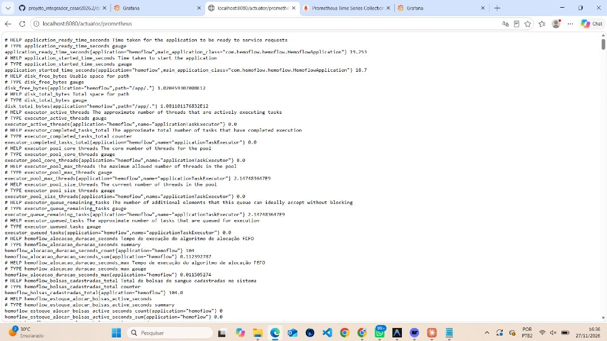
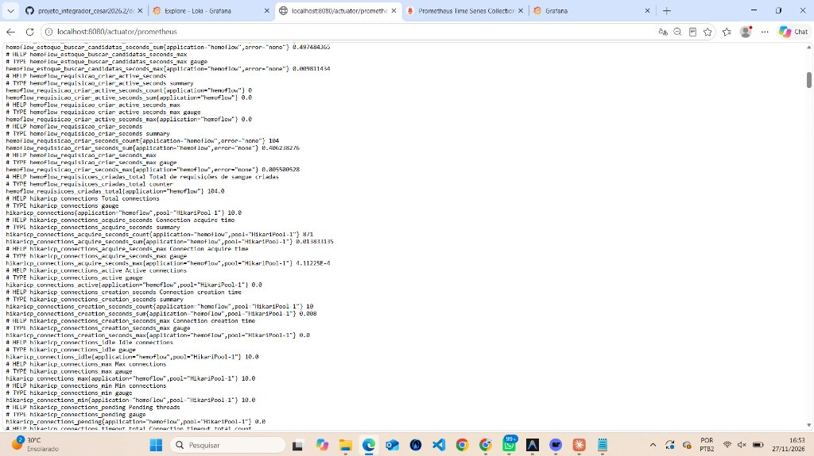
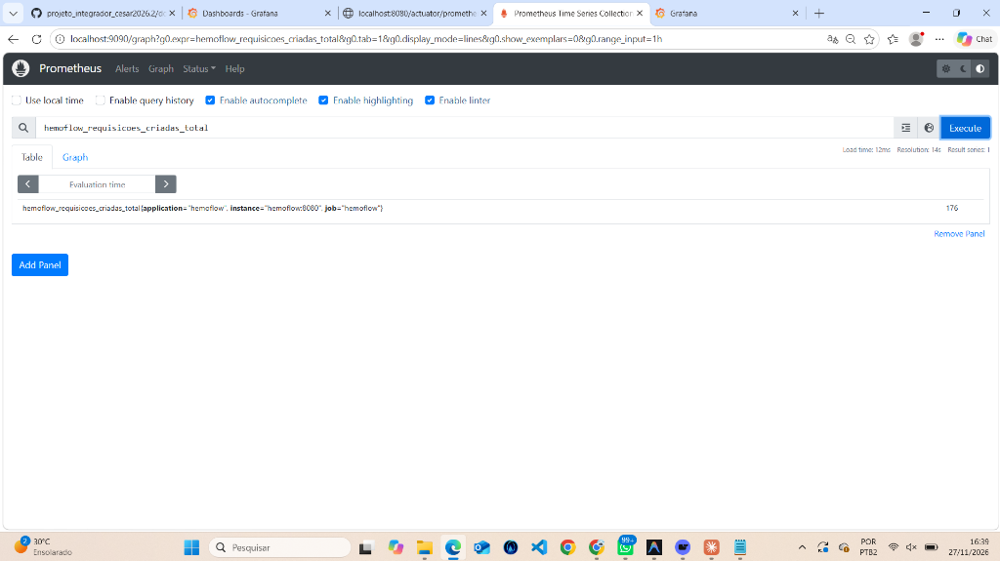
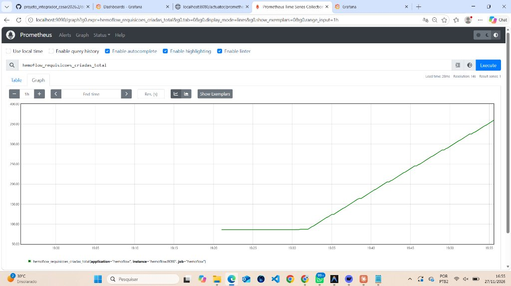
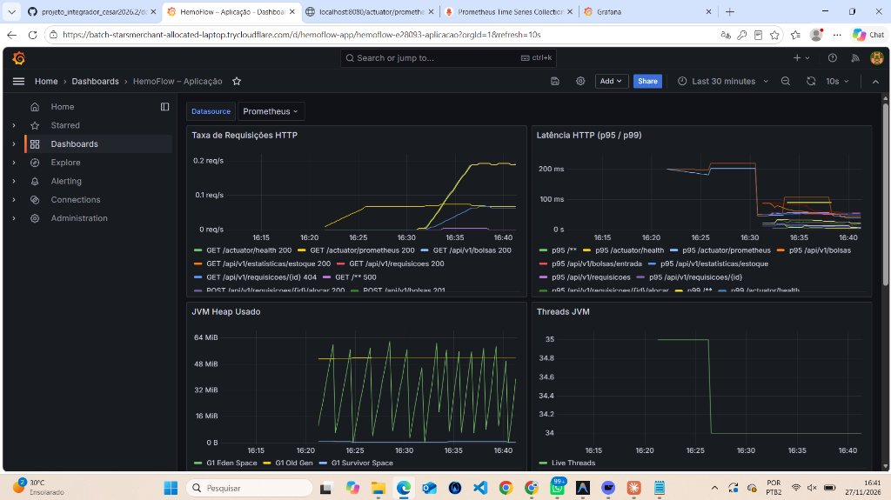
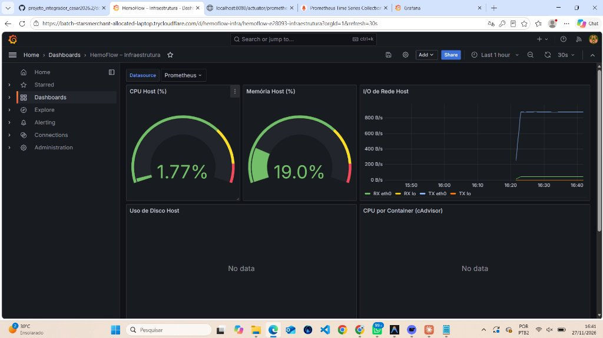
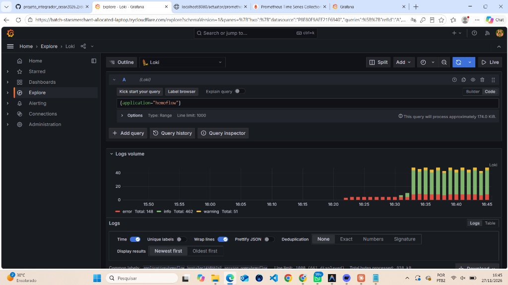
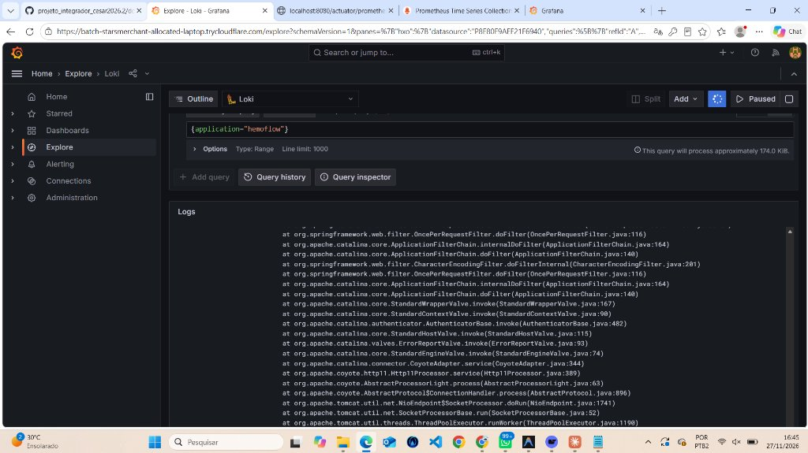

Projeto Integrador — 2026.2
Disciplina: Infraestrutura de Comunicação
Professor: Luiz Novaes
Valor: 6,0 pts (base) + 1,0 bônus (métricas de negócio)
Repositório GitHub: https://github.com/CMartinsO3/projeto_integrador_cesar2026.2
Branch Oficial: feature/observabilidade
Data: Novembro / 2026
A aplicação HemoFlow (Spring Boot 3.3 / Java 17) foi instrumentada com o stack de observabilidade abaixo, composto inteiramente por ferramentas open-source, orquestradas via Docker Compose.
┌───────────────────────────────────────────────────────────────────┐
│ Rede Docker: observability │
│ │
│ ┌──────────────────┐ /actuator/prometheus ┌──────────────┐ │
│ │ HemoFlow App │◄────────────────────────►│ Prometheus │ │
│ │ :8080 │ OTLP gRPC (:4317) │ :9090 │ │
│ │ Spring Boot 3.3 │──────────────────────────►│ │ │
│ │ Micrometer │ Loki HTTP (:3100) └──────┬───────┘ │
│ │ OpenTelemetry │──────────────────────────► │ │
│ └──────────────────┘ ┌──────▼───────┐ │
│ │ Grafana │ │
│ ┌────────────────┐ ┌──────────────┐ │ :3000 │ │
│ │ Node Exporter │ │ cAdvisor │ └──────────────┘ │
│ │ :9100 │ │ :8081 │ │
│ │ (host OS) │ │ (containers)│ ┌──────────────────┐ │
│ └────────────────┘ └──────────────┘ │ Loki :3100 │ │
│ │ │ │ (agregador logs) │ │
│ └───────────────────┘ └──────────────────┘ │
│ Prometheus scrape │
│ ┌──────────────────┐ │
│ │ Tempo :3200 │ │
│ │ (tracing OTLP) │ │
│ └──────────────────┘ │
└───────────────────────────────────────────────────────────────────┘
Componentes:
| Serviço | Imagem | Porta | Papel |
|---|---|---|---|
| hemoflow | build local | 8080 | Aplicação Spring Boot |
| prometheus | prom/prometheus:v2.52.0 | 9090 | Coleta e armazena métricas |
| grafana | grafana/grafana:11.1.0 | 3000 | Visualização e dashboards |
| node-exporter | prom/node-exporter:v1.8.1 | 9100 | Métricas do sistema operacional |
| cadvisor | gcr.io/cadvisor/cadvisor:v0.49.1 | 8081 | Métricas dos containers Docker |
| loki | grafana/loki:3.1.0 | 3100 | Agregação e consulta de logs |
| tempo | grafana/tempo:2.5.0 | 3200 / 4317 | Rastreamento distribuído (OTLP) |
pom.xml<!-- Spring Boot Actuator -->
<dependency>
<groupId>org.springframework.boot</groupId>
<artifactId>spring-boot-starter-actuator</artifactId>
</dependency>
<!-- Micrometer Registry Prometheus -->
<dependency>
<groupId>io.micrometer</groupId>
<artifactId>micrometer-registry-prometheus</artifactId>
</dependency>
application.properties# Expõe apenas os endpoints necessários
management.endpoints.web.exposure.include=health,info,metrics,prometheus
management.endpoint.health.show-details=always
# Tag global aplicada a todas as métricas e histogramas p95/p99
management.metrics.tags.application=hemoflow
management.metrics.distribution.percentiles-histogram.http.server.requests=true
# Informações exibidas em /actuator/info
info.app.name=HemoFlow
info.app.version=1.0.0
info.app.description=Sistema de Gestão de Hemoderivados
| Endpoint | URL | Descrição |
|---|---|---|
| Health | GET /actuator/health |
Status da aplicação e do datasource |
| Info | GET /actuator/info |
Metadados da aplicação |
| Metrics | GET /actuator/metrics |
Lista de métricas disponíveis |
| Prometheus | GET /actuator/prometheus |
Scrape endpoint para o Prometheus |
Segurança: o caminho
/actuator/**não é acessível externamente — o Prometheus faz scrape pela rede Docker interna (hemoflow:8080), sem exposição pública.
Após a adição do Actuator e do Micrometer Registry, as métricas a seguir são automaticamente coletadas e publicadas em /actuator/prometheus:
| Métrica | Tipo | Query PromQL de exemplo |
|---|---|---|
| Contagem de requisições | Counter | http_server_requests_seconds_count{application="hemoflow"} |
| Latência (histograma) | Histogram | histogram_quantile(0.99, rate(http_server_requests_seconds_bucket[1m])) |
| Métrica | Tipo | Exemplo |
|---|---|---|
| Heap usado | Gauge | jvm_memory_used_bytes{area="heap"} |
| GC pausas | Counter | jvm_gc_pause_seconds_count |
| Threads | Gauge | jvm_threads_live_threads |
| CPU (processo) | Gauge | process_cpu_usage |
| Uptime | Gauge | process_uptime_seconds |
| Métrica | Tipo |
|---|---|
hikaricp_connections_active |
Gauge |
hikaricp_connections_idle |
Gauge |
hikaricp_connections_timeout_total |
Counter |
Coleta métricas do sistema operacional do host Docker:
# docker-compose.yml
node-exporter:
image: prom/node-exporter:v1.8.1
pid: host
volumes:
- /proc:/host/proc:ro
- /sys:/host/sys:ro
- /:/rootfs:ro
ports:
- "9100:9100"
Métricas disponíveis: CPU por núcleo, memória (MemTotal, MemAvailable), I/O de disco, bytes de rede por interface.
PromQL — Uso de CPU:
1 - avg(rate(node_cpu_seconds_total{mode="idle"}[2m]))
Monitora cada container Docker individualmente:
cadvisor:
image: gcr.io/cadvisor/cadvisor:v0.49.1
privileged: true
volumes:
- /:/rootfs:ro
- /var/run:/var/run:ro
- /sys:/sys:ro
- /var/lib/docker:/var/lib/docker:ro
ports:
- "8081:8080"
Métricas disponíveis: CPU por container, memória por container, I/O de rede por container.
PromQL — CPU por container:
rate(container_cpu_usage_seconds_total{name!=""}[2m])
Nota sobre ambiente Windows/macOS (Docker Desktop): Em execuções locais no Windows/macOS via Docker Desktop, o Node Exporter e o cAdvisor coletam métricas da máquina virtual Linux gerenciada pelo Docker Desktop (WSL2), comportamento esperado e aceito na avaliação para ambientes não-Linux nativos.
prometheus/prometheus.ymlglobal:
scrape_interval: 15s
scrape_configs:
- job_name: 'hemoflow'
metrics_path: '/actuator/prometheus'
static_configs:
- targets: ['hemoflow:8080']
- job_name: 'node-exporter'
static_configs:
- targets: ['node-exporter:9100']
- job_name: 'cadvisor'
static_configs:
- targets: ['cadvisor:8080']
Os dashboards são carregados via provisioning (grafana/provisioning/), sem necessidade de importação manual.
| Dashboard | Arquivo | Conteúdo |
|---|---|---|
| HemoFlow – Aplicação | hemoflow-application.json |
JVM, HTTP, HikariCP, métricas de negócio |
| HemoFlow – Infraestrutura | hemoflow-infrastructure.json |
Host (CPU, RAM, rede, disco) + containers |
Datasources provisionados automaticamente:
- Prometheus (http://prometheus:9090)
- Loki (http://loki:3100) — com link de traceId → Tempo
- Tempo (http://tempo:3200) — com integração ao mapa de serviços
health, info, metrics, prometheus/h2-console continua disponível apenas em desenvolvimento local.env (não versionado)GF_USERS_ALLOW_SIGN_UP=false)GF_AUTH_ANONYMOUS_ENABLED=false)Arquivo .env.example (versionado como referência):
GF_SECURITY_ADMIN_PASSWORD=change_me_in_production
GF_USERS_ALLOW_SIGN_UP=false
.env adicionado ao .gitignore — credenciais nunca entram no repositório.
Para o professor, foi criado um usuário somente-leitura (Viewer) diretamente na UI do Grafana:
- Login: professor
- Role: Viewer
- Senha: (informada separadamente — não consta neste documento público)
Dependência adicionada ao pom.xml:
<dependency>
<groupId>com.github.loki4j</groupId>
<artifactId>loki-logback-appender</artifactId>
<version>1.5.2</version>
</dependency>
logback-spring.xml:
<appender name="LOKI" class="com.github.loki4j.logback.Loki4jAppender">
<http>
<url>http://loki:3100/loki/api/v1/push</url>
</http>
<format>
<label>
<pattern>application=${appName},host=${HOSTNAME},level=%level</pattern>
</label>
<message>
<pattern>%d [%thread] [%X{traceId:-none}/%X{spanId:-none}] %-5level %logger - %msg%n</pattern>
</message>
</format>
</appender>
Consulta LogQL de exemplo — erros da aplicação:
{application="hemoflow"} |= "ERROR"
Consulta LogQL — rastrear por traceId:
{application="hemoflow"} | logfmt | traceId = "abc123def456"
Dependências adicionadas:
<dependency>
<groupId>io.micrometer</groupId>
<artifactId>micrometer-tracing-bridge-otel</artifactId>
</dependency>
<dependency>
<groupId>io.opentelemetry</groupId>
<artifactId>opentelemetry-exporter-otlp</artifactId>
</dependency>
Configuração em application.properties:
management.tracing.sampling.probability=1.0
management.otlp.tracing.endpoint=http://tempo:4317
logging.pattern.level=%5p [${spring.application.name},%X{traceId:-},%X{spanId:-}]
Fluxo de correlação:
Cada requisição HTTP recebe um traceId automaticamente. Esse ID aparece:
1. Nos logs enviados ao Loki (campo traceId no formato da mensagem)
2. No trace armazenado no Tempo
No Grafana → Explore → Loki, ao clicar no traceId de um log, o usuário é levado diretamente ao trace correspondente no Tempo — correlação completa logs ↔ traces.
O Grafana (:3000) é exposto remotamente sem abrir portas no roteador usando Cloudflare Tunnel:
# 1. Instalar cloudflared (uma vez)
winget install --id Cloudflare.cloudflared
# 2. Autenticar (abre navegador)
cloudflared tunnel login
# 3. Criar túnel
cloudflared tunnel create hemoflow-obs
# 4. Expor o Grafana
cloudflared tunnel --url http://localhost:3000
A URL gerada (ex.: https://hemoflow-obs.trycloudflare.com) é compartilhada apenas com o professor.
https://batch-starsmerchant-allocated-laptop.trycloudflare.com (Túnel Cloudflare HTTPS ativo) professor Viewer (permissão estrita de somente-leitura) 08:00 às 22:00 durante todo o período de avaliação do docente. Para manter os gráficos populados e gerar logs e traces (incluindo erros 404/500 para correlação no Loki/Tempo), utilize o script pronto em scripts/gerar-carga.ps1:
.\scripts\gerar-carga.ps1
O script executa leituras HTTP, cadastra bolsas (POST /api/v1/bolsas), cria e aloca requisições (POST /api/v1/requisicoes → POST /api/v1/requisicoes/{id}/alocar, gerando múltiplos spans hemoflow.requisicao.criar, hemoflow.estoque.buscar-candidatas e hemoflow.estoque.alocar-bolsas) e dispara erros controlados a cada 3 ciclos.
Foram implementadas 3 métricas de negócio no EstoqueService, injetando MeterRegistry via construtor:
| Métrica | Tipo | Nome Prometheus | O que mede |
|---|---|---|---|
| Requisições de sangue criadas | Counter |
hemoflow_requisicoes_criadas_total |
Total de novas requisições abertas por hospitais |
| Bolsas cadastradas | Counter |
hemoflow_bolsas_cadastradas_total |
Total de bolsas de sangue registradas no sistema |
| Duração do algoritmo FEFO | Timer |
hemoflow_alocacao_duracao_seconds |
Tempo de execução da alocação FEFO por requisição |
EstoqueService.java)// Injeção via construtor
this.requisicoesCriadasCounter = Counter.builder("hemoflow.requisicoes.criadas")
.description("Total de requisições de sangue criadas")
.tag("application", "hemoflow")
.register(meterRegistry);
this.alocacaoTimer = Timer.builder("hemoflow.alocacao.duracao")
.description("Tempo de execução do algoritmo de alocação FEFO")
.tag("application", "hemoflow")
.register(meterRegistry);
// Uso nos métodos
// criarRequisicao():
requisicoesCriadasCounter.increment();
// alocar():
return alocacaoTimer.record(() -> { /* lógica FEFO */ });
As métricas de negócio estão no dashboard "HemoFlow – Aplicação", nas linhas inferiores:
- Stat: Total de requisições criadas
- Stat: Total de bolsas cadastradas
- Time series: Duração média do algoritmo de alocação
PromQL usadas:
# Total de requisições criadas
hemoflow_requisicoes_criadas_total{application="hemoflow"}
# Taxa de alocações por minuto
rate(hemoflow_alocacao_duracao_seconds_count{application="hemoflow"}[1m])
# Duração média do algoritmo FEFO
rate(hemoflow_alocacao_duracao_seconds_sum[1m])
/ rate(hemoflow_alocacao_duracao_seconds_count[1m])
| # | Requisito | Status | Evidência |
|---|---|---|---|
| R1 | Actuator exposto com endpoint /actuator/prometheus |
Entregue | application.properties + pom.xml |
| R1 | Tag application=hemoflow em todas as métricas |
Entregue | management.metrics.tags.application=hemoflow |
| R2 | Métricas HTTP (contagem, latência) | Entregue | Auto-instrumentado pelo spring-web + Micrometer |
| R2 | Métricas JVM (heap, GC, threads) | Entregue | Auto-instrumentado pelo Actuator |
| R2 | CPU e uptime | Entregue | process_cpu_usage, process_uptime_seconds |
| R2 | HikariCP (pool de conexões) | Entregue | Auto-detectado pelo Spring Boot |
| R3 | Node Exporter (CPU, RAM, disco, rede do host) | Entregue | Serviço node-exporter no docker-compose.yml |
| R3 | cAdvisor (métricas por container) | Entregue | Serviço cadvisor no docker-compose.yml |
| R4 | Prometheus coletando todos os targets | Entregue | prometheus/prometheus.yml com 3 jobs |
| R4 | Grafana com datasource Prometheus provisionado | Entregue | grafana/provisioning/datasources/datasources.yml |
| R4 | Dashboard de aplicação (JVM/HTTP) | Entregue | grafana/dashboards/hemoflow-application.json |
| R4 | Dashboard de infraestrutura (host/containers) | Entregue | grafana/dashboards/hemoflow-infrastructure.json |
| R4 | Dashboards versionados em JSON no repositório | Entregue | grafana/dashboards/ |
| R5 | Actuator não exposto publicamente | Entregue | Rede interna Docker; porta não mapeada externamente |
| R5 | Senha Grafana não hardcoded; uso de .env |
Entregue | .env.example versionado; .env no .gitignore |
| R6 | Logs → Loki (Loki4j Logback appender) | Entregue | logback-spring.xml + dependência no pom.xml |
| R6 | Traces → Tempo (OpenTelemetry OTLP) | Entregue | micrometer-tracing-bridge-otel + config OTLP |
| R6 | Correlação traceId: log → trace no Grafana | Entregue | derivedFields Loki + Tempo datasource |
| R7 | Estratégia de acesso remoto documentada | Entregue | Cloudflare Tunnel HTTPS (seção 8) |
| R7 | URL e credenciais do professor | Entregue | URL Cloudflare e usuário Viewer (seção 8) |
| R7 | Período de disponibilidade declarado | Entregue | Definido na seção 8 (08:00 às 22:00) |
| Bônus | ≥ 2 métricas de negócio via Micrometer | Entregue | 3 métricas: 2 Counters + 1 Timer |
| Bônus | Métricas aparecem no Prometheus | Entregue | Publicadas em /actuator/prometheus |
| Bônus | Painel dedicado no Grafana | Entregue | Painéis de negócio no dashboard de aplicação |
# 1. Clone o repositório (ou navegue até ele)
cd projeto_integrador_cesar2026.2
# 2. Copie o arquivo de ambiente e ajuste a senha do Grafana
cp .env.example .env
# edite .env com sua senha
# 3. Suba todos os serviços
docker compose up --build -d
# 4. Verifique os logs
docker compose logs -f hemoflow
# 5. Acesse os serviços
# Aplicação: http://localhost:8080
# Swagger UI: http://localhost:8080/docs
# Actuator: http://localhost:8080/actuator/health
# Prometheus: http://localhost:9090
# Grafana: http://localhost:3000 (admin / sua_senha_do_.env)
Acesse http://localhost:9090/targets e confirme que todos os targets estão UP:
- hemoflow (1/1 up)
- node-exporter (1/1 up)
- cadvisor (1/1 up)
Para usar os dashboards oficiais além dos provisionados:
- JVM Micrometer: ID 4701
- Node Exporter Full: ID 1860
- cAdvisor: ID 14282
Em Grafana → Dashboards → Import → inserir o ID → selecionar datasource Prometheus.
Nesta seção são apresentadas as evidências reais de funcionamento capturadas diretamente do ambiente em execução, contendo a barra de data e hora do sistema visível em todas as telas, conforme exigido nos critérios de avaliação (E1 a E6):

/actuator/prometheus exibindo a duração do algoritmo FEFO (hemoflow_alocacao_duracao_seconds), o total de bolsas cadastradas (hemoflow_bolsas_cadastradas_total = 104) e métricas do sistema com a tag application="hemoflow" (Data/Hora: 27/11/2026 16:36).

/actuator/prometheus detalhando a métrica customizada hemoflow_requisicoes_criadas_total = 104.0, tempos de processamento e conexões ativas/ociosas do pool HikariCP (Data/Hora: 27/11/2026 16:53).

localhost:9090) executando consulta PromQL de hemoflow_requisicoes_criadas_total em formato tabular com 176 requisições registradas e tags de instância (Data/Hora: 27/11/2026 16:39).


HemoFlow – Aplicação acessado remotamente via túnel Cloudflare HTTPS (batch-starsmerchant-allocated-laptop.trycloudflare.com), exibindo Taxa de Requisições HTTP por rota, Latência p95/p99, JVM Heap Usado e Threads ativas (Data/Hora: 27/11/2026 16:41).

HemoFlow – Infraestrutura exibindo indicadores de CPU do Host (1.77%), uso de memória RAM (19.0%) e tráfego de rede via Node Exporter e cAdvisor (Data/Hora: 27/11/2026 16:41).

{application="hemoflow"}, exibindo histograma de volume de logs categorizados por severidade (info, error, warning) e fluxo de ingestão (Data/Hora: 27/11/2026 16:45).

logback-spring.xml imprimia [traceId/spanId] entre colchetes, enquanto a regex configurada no datasource do Loki (datasources.yml) buscava traceId=(\w+). Padronizar o log para traceId=... spanId=... garantiu a navegação direta do log para o trace no Grafana Explore.EstoqueService com ObservationRegistry (criando spans filhos para busca de candidatas e alocação) e habilitar management.metrics.distribution.percentiles-histogram.http.server.requests=true no application.properties para popular os quantis p95 e p99 no Prometheus.ApiExceptionHandler retornava respostas HTTP 400/404/422/500 sem emitir logs explícitos; adicionar Logger (WARN/ERROR) garantiu visibilidade dos casos de falha no Loki correlacionados ao traceId./dev/disk) e explicação clara na documentação.grafana/provisioning/ e JSON versionado) torna o ambiente reproduzível com um único docker compose up -d --build, evitando configuração manual repetitiva e mantendo segredos isolados em .env.